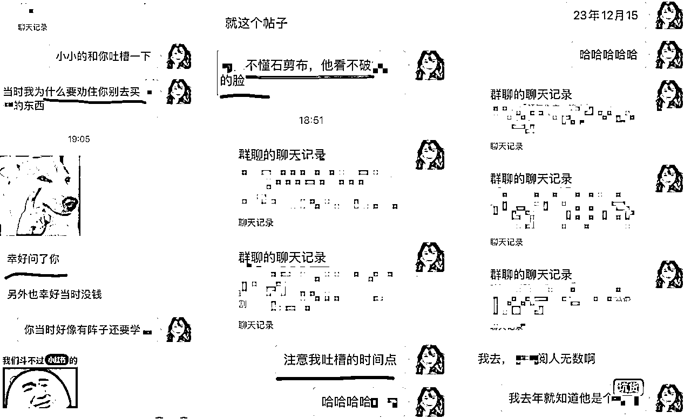
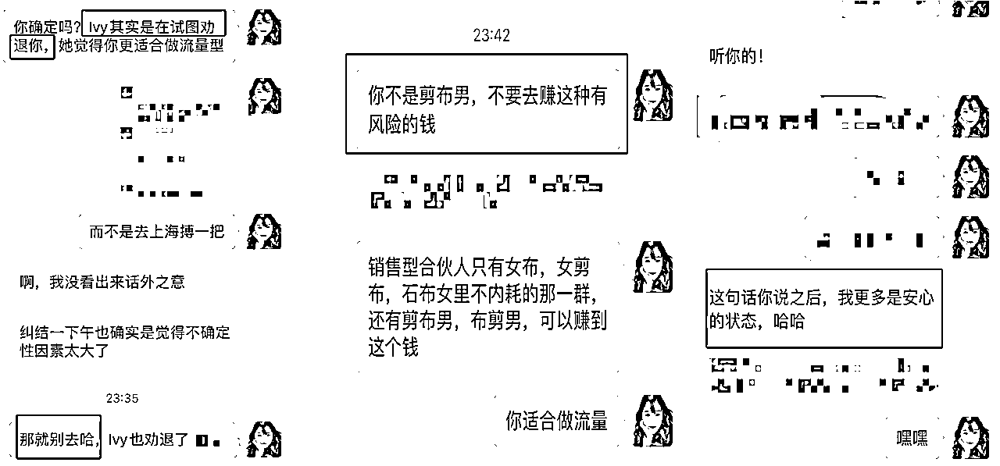
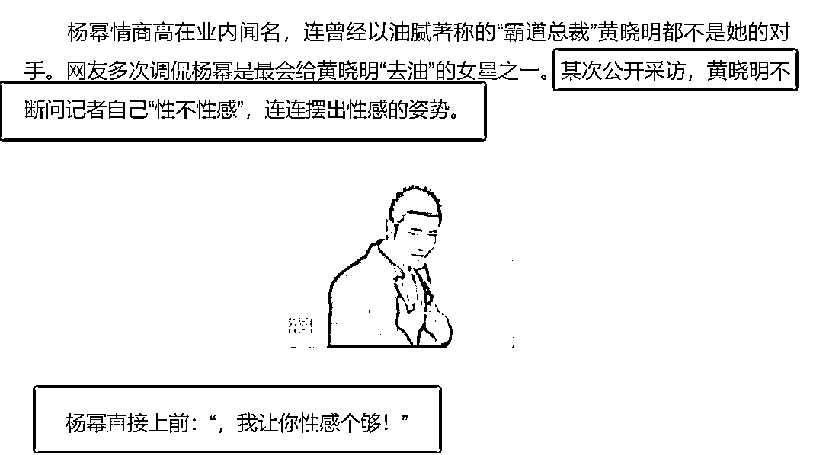
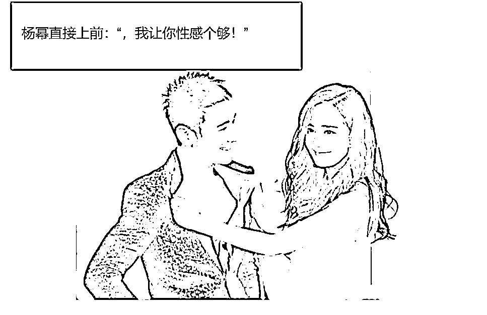
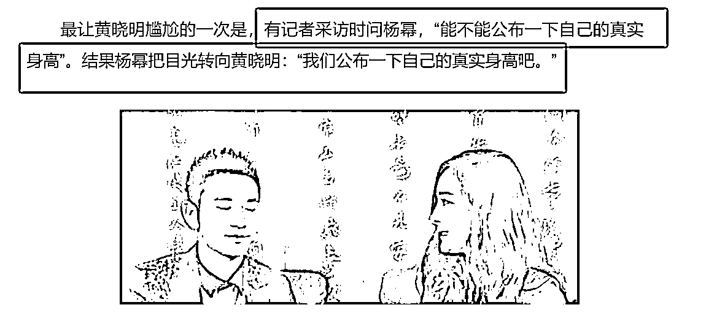
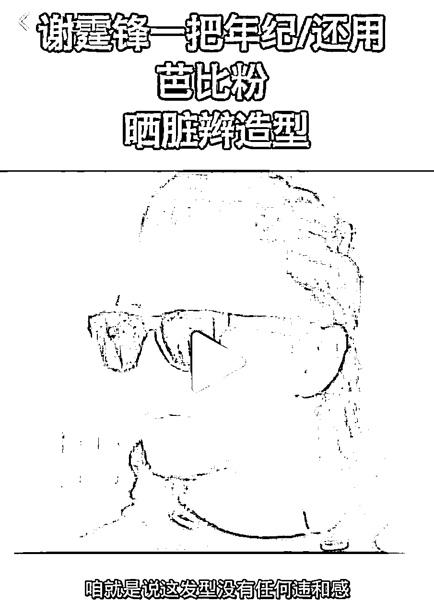
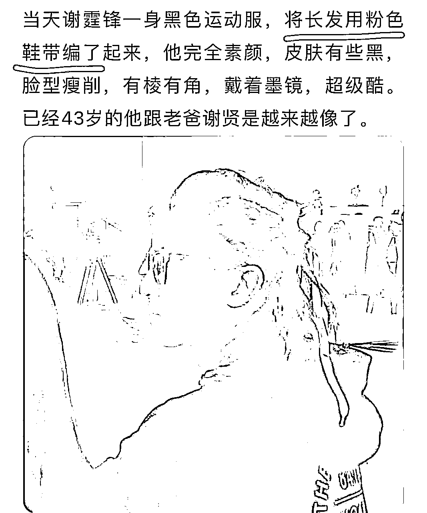

来源：https://ht16ej1tui.feishu.cn/docx/TakudJjhdoD0cixPIyHciXblngd
Hi大家好呀，我是和陈铭Ivy一块在留学赛道做了2700w营收，又转行去做卖房，两个月卖出1个亿的珍妮。今天分享的是：「老板识人大法」：如何避免被人割韭菜？筛选运营、销售、与交付人员？
很多人会被别人坑、被人割韭菜，Ivy和我当然也被坑过，也有很多钱打过水漂，但我们算是老板堆里很能识人的人了。
【不保证100%识人准确哈，有时遇到被人降维打击、看不准对方属性的时候，我们也会被坑。】
比如我23年12月就识别出谁是坑货，我身边有人想买什么东西，我哪怕根本没买过，我都能透过对方平时的公众号、朋友圈、社群里说话的风格，判断出谁的东西不靠谱。接着，我会及时劝阻那个来问我的人。
最后那个卖产品的人果然暴雷了。
当然我劝阻别人的时候，我也不能明面说【对方产品有问题或者不适合谁谁谁】，这个完全靠【来问我的人】，他【能不能get到我背后的意思。】
有些人也劝不住啊，他们还是会去买，最后被人割了韭菜又来哭诉“珍妮/ivy，你是对的。”

上图释义：
圈友A告诉我：谁谁谁的产品暴雷了，我发出我23年12月和Ivy小声bb的聊天记录，告诉对方，我去年就知道他是坑货。
圈友B，我认识他是去年9月，他中途想去学XXX，后来又想去学XXXX，我劝他别买。

上图释义：圈友C和圈友D，特别想去上海做销售型卖房代理人，我们劝他不要去，因为他两不适合这个岗位。
所以今天把这个识人大法分享给大家。
注：
只能用来防身，不能拿来主动攻击他人哈，尤其是新手，学艺不精的时候是会出问题的。
分享之前先给各位老板滑跪：
我不是来树敌的哈，本文没有攻击任何人。
为避免有老板觉得我是在给谁打广告，我把一切可能【夸夸别人的词】都删掉了，或者把人名用xx代替，仅在结尾表示致谢。
「石剪布理论」是娃姐（Ayawawa）提出的理论，非常适合用来识人，不仅适合婚恋择偶，更适合企业招人用人。
以下是本文目录：
2.1 石剪布每个名词是什么意思？
2.2 职场上的石剪布三个属性分别有什么特质呢？
3.1 运营岗位的划分标准
3.2 怎样把石剪布属性运用到运营岗位的招人里呢？
3.3 适合做运营的人只有以下几类
4.1 销售只有两类人做得好
4.2 线上销售和线下销售，适合什么人？
4.3 剪布男为什么没有那么那么擅长销售？
4.4 为什么核心剪男和剪布女擅长做销售呢？
4.5 做销售出身，和做运营出身的人，是两类人。
4.6 运营出身的人，如果他做不了销售，多半是因为他布性不够强。
4.7【10个角度】企业招人，怎样区分：剪布男和布剪男？
4.8【6个角度】企业招人，怎样区分：剪布女和布剪女？
5.1 石性+剪性岗位举例：
5.2 布性+石性岗位举例：
5.3【5个角度】企业招人，怎样区分：剪石女和石剪女？
5.4【9个角度】企业招人，怎样区分：剪石男和石剪男？
5.5【11个角度】企业招人，怎样区分：石布女和布石女？
5.6【7个角度】企业招人，怎样区分：石布男和布石男？
珍妮对MBTI，盖洛普，PDP性格测试，都有大大小小的了解，这些测试都有各自的用途。但最能打通识人底层逻辑的，就是石剪布理论，一招鲜，吃遍天。
因为不管是MBTI、盖洛普，还是PDP，都更像是在给人提供情绪价值，一般都是夸一个人有什么优点。如果遇到一个人的缺点，往往会说得非常浅显，而不会把这个人背后的人性弱点赤裸裸的全部扒出来。
但是，石剪布可以。
知道这个方法不是为了让我们见到谁就去扒对方的缺点，
因为每个属性都有自己的缺点，是个人就会有缺点，
但是，我们可以看出对方的属性、思考我们彼此之间有什么脑回路、他是怎样思考事情的、我又是如何思考的、对方可能做什么蠢事、我又可能做什么蠢事。
如果对方是我们的朋友，那么在对方做蠢事之前，阻止他。
如果不是，那么对方要做蠢事时，我们不要参与，以免卷入纷争。
每个人都有自己要吃的苦头，我们不要替别人挡灾难。
今天珍妮会从运营、销售、交付，三大角度，和大家分享：
老板要怎样通过石剪布理论去筛人，并且把合适的人，安排到合适的位置？
注：
珍妮在介绍石剪布理论时，是用比较简单的句子去概括各个属性的特点的，个别地方可能表述不太恰当。
一个属性的特点会比珍妮概括的内容要更复杂。
如果想要深入了解石剪布理论，可以搜公众号ayawawa，进娃姐的知识星球学习。
不要去和AI对话学这个，AI说的都是错的。
除了娃姐本人的星球和公众号以外，有很多人也会写石剪布，但不是每一个石剪布博主都是婚规师，她们写的可能是错的。
我平时一般关注的有：陆美然、酷评君专治各种不服、奔跑的甜筒。
我平时除娃姐星球外，最喜欢看的知识星球有：
螃蟹的干货分享星球（石头女的星球，教人学会如何和剪布男家属相处&培养小孩）、
阿紫陪着你的星球（剪子女的星球，教人学会感恩）
印钞游乐场（一个可以吊打几乎所有「还没有财富自由，在职场或者婚姻中遇到了困惑的人」的星球）
一个人要有足够大的福气，才会遇到一个愿意叫醒他的人。
还得有足够大的福气，才能真的被叫醒。
很多人没有这个福气，没人叫醒他或者没法被叫醒。
我是石剪布理论的受益者，被同班同学叫醒，属于石布女靠石剪布理论改命成功。
当然我所做的还很有限，我需要努力的空间还有很大。
祝看到这里的你，和我一块，被叫醒，拥有富足的人生。
同事1：给ta布置任何任务，ta都说好的好的。做出来的东西p用没有。
同事2：给ta布置任何任务，ta也做了，也还行，但总感觉ta没有那么强的责任心。ta只管过程，不管结果。有时候还会对你说彩虹屁麻痹你，你信了你就吃大亏。
同事3：干活认真踏实，和每个人都处的很好，厨艺小能手，很会做饭，工作中大家都觉得ta吃亏了，应该多给ta发钱。
同事4：工作贼拼命，业绩公司no.1，人竟然还超级好相处。你和ta聊天总是觉得很开心。
同事5：工作贼拼命，业绩好，但下班后竟然还带孩子，很尊重老公和公婆。
同事6：工作贼拼命，业绩好，又美又飒，不想结婚，丁克，对象总是能秒回自己信息。
同事7：工作贼拼命，业绩还不错，但说话有时候很膈应人，喜欢找你倾倒负能量，内耗。
同事8：长得挺帅一小伙，工作做的也还踏实，但说话有时候膈应人，内耗。有时候让你觉得“好好一个帅哥，怎么长了这样一张嘴”。
同事9：指哪打哪，业绩普通或者不错，总之不会拉胯。不会和你聊太多，和ta相处久了才发现：
他有一个特别漂亮&会提供情绪价值的老婆。
她有一个特别有钱&会给下一代很多资源的老公。
同事10：觉得ta特别有魅力，想要跟随ta，最后ta负债倒闭，欠了你的钱，总是说“我会还的”但没有还。
以上10个同事的特质，有时会出现在同一类人身上。每类人都有他的正面特质和负面特质，这是并存的，区别在于“这个人愿意展现哪类特质”。
看一个人，只看他的正面特质是没有用的，因为我们可能被对方带到坑里去。要通过他的正面特质，去猜他的负面特质，提前猜测这个人在低谷期会做出什么事，并且判断自己能否接受。
石剪布理论就是识别不同人的好方法。
但是！想要知道一个人是石剪布的哪个属性，需要知道ta和谁结婚，日常相处模式是怎样的。
而不能仅看对方在职场上的属性。
因为职场上大家可以戴上面具，只有婚姻或者长久恋爱中的相处模式，才能展示一个人的真实属性。
比如：
有的剪布女（又美又飒有主见，让你听她安排、吃你情绪价值的女人），
在职场上可以伪装成布剪女（很美很牛，但竟然给你提供情绪价值）。
石头女（托付心重、老实干活、指哪打哪的女人），也可能伪装成剪布女。
对上司打石头牌的人，也可能是石布（看上去老实干活，实际上非常有主见，不听劝）。
一般越往高层走的人，ta越可能在职场和婚姻里是两副模样。
越在一线，越没有面具，和ta聊天基本就能倒推：这个人的婚姻状态，恋爱状态。
所以我们招一线员工时，比较容易通过职场属性判断他的真实属性。
而与高层打交道，如果不了解对方婚姻或者恋爱中的相处模式，是没法通过职场属性判断真实属性的。
今天和大家分享的所有内容，仅从「职场角度」判断，不涉及「真实属性」。
绝大多数人是没法剪石布三个属性同时拥有的，都会有一个核心属性，并且一个外显的第二属性。
举个例子：
假如一个人，剪性40%，布性60%，那他就是剪布。（布性更多，所以是核心布）
假如一个人，剪性60%，布性40%，那他就是布剪。（剪性更多，所以是核心剪）
依次类推，我们可以知道：石布男/女，布石男/女，剪石男/女，石剪男/女，布剪男/女，剪布男/女，纯石头男/女，纯剪子男/女，纯布男/女的区别。
假如一个人，无论男女，都让你觉得：这人又剪又石又布，只有三个属性的优点，没有属性隐藏的缺点，那他就是剪布，而不是布剪。因为布剪的石性很弱。
在职场上，他们代表的意思是
正面：忠诚、能干活、指哪打哪
负面：托付心强、不懂变通、你说A他就只做A，不知道要考虑B、容易埋头干活却不反思流程的改进方案
正面：能让周围的人感到愉快、给对方提供情绪价值、有好看的外表/身材，好性格、不会索取别人的情绪价值、情绪非常稳定
负面：只说漂亮话，办事拖拉或者是个坑货，忠诚度低
正面：执行力超强、能自我反思调整工作流程、推动工作进度、一个人能抵好几人、有自己的想法
负面：说话不考虑别人感受、为了自身利益侵占别人领地、脾气不好、忠诚度低、太有自己的想法，你说A他就做B
那些爬到顶层的人，都是石剪布三个属性拉满max，但又只表现正面属性。
现在我们能通过组合，分辨出职场上不同男女的特质了：
表面看上去老实，也老实干活，但因为是核心布，所以非常有主见，做事不听劝。看上去忠诚，实际上并不。因为一个核心布很难忠诚。
有的老板会遇到：可是我都要倒闭要裁员了，这个石布员工还愿意在我这干活是咋回事？
那是因为对方本就高攀了我们这份工作，离开我们他再也找不到下一份有同等待遇的工作。所以石布员工有时看上去又很忠诚。
但这种忠诚是因为他们没有选择权。
不是“明明有选择权，但依旧选择我们”的忠诚。
有石布的优点，没有石布的缺点。她们又能干活又执行力强，一个人抵好几个人，是搞事业的一把好手。
石布的优点很少，缺点却很多。因为很内耗，时间都拿去内耗了，所以工作业绩一般般，经常踩别人的边界，性格臭，很爱质疑他人，并且负面评判他人。
如果我们不能拿出证据贴ta脑门上，ta就觉得“我们是垃圾，不配服务ta”。
想想咱们平时做生意时，刚加上微信就要你拍营业执照或者拿出各种证据的客户，以及买了一个超低价的产品还要你送这送那的女客户，基本都是石布女没得跑了。
招员工时刚加上你微信就开始质疑：“你是不是要把ta骗去缅甸，是不是要先付款才能给ta这份工作”那种。基本都是石布女。
因为其他属性的人，找工作就不会遇到那种“必须先付款才能给ta工作”的企业，大家听到这种企业都会直接跑路。
只有石布女，能力够不上，但是贪心，才会去高攀自己得不到的待遇，最后被那种要坑ta钱的企业骗了，受伤后遇到任何别的企业都要先问一句“你该不会要我先付钱才能工作吧，你营业执照能不能给我看看”。
已经成为同事后，经常和你倾倒负能量，说“自己对象/老公/公婆对自己不好；和婆婆有月子仇；老公有了和没有一个样；孩子生完后让自己损失很大，牺牲了很多；老公常年不在家，经常出差，晚上总是11-12点才回来，不照顾自己；今天遇到一个倒霉事；昨天也遇到一个倒霉事；前天也遇到倒霉事；商家甲宰自己；商家乙害自己；老板丙对自己居心不良；同事丁对自己有意见；老公赌博欠债来找你借钱；和老公离婚后、老公完全不管自己孩子的”，石布女没得跑了。
因为其他属性的人就不会遇到“这么多人都对自己不好”。
谁没事天天对一个人不好啊，大家都要工作，忙得很呢。
觉得“所有人都欠我，都对我不好，这人不好，那人也不好”，多半自己才是那个：“得到了最多，付出的最少，最难与人相处的”。
职场上所有人都知道“这时候不能这样和领导说话”的时候，有个在一线工作的女人站出来开始巴拉巴拉给领导提建议，说的话都很不好听，这种也是石布女没得跑了。
石布女有石布程度20%，60%，80%，100%的。
一般程度的石布女，看起来会像石头女，所以人际关系处理的还可以。
铁血石布女最难让人和她相处。你做生意时哪怕第一次认识她，也会觉得她说话一股火药味。（此处珍妮没有晒石布女的常见聊天记录，感兴趣的友友可以去看娃姐公众号）
这类人的工资一般很低。但这类人自己不觉得，因为这是她们能找到的最好的工作。其他老板给的工资会更低，或者待遇更差，或者早就把她裁员了。
这类人如果一个月能搞1-2万，其实已经是很低了的。因为一个石布女本应该是搞事业的一把好手，石布女少说话多做事少内耗，是可以搞更多钱的。如果一个石布女一个月只能搞1-2万，基本都是太内耗了。
石布女的颧骨一般都很高，发际线也高，嘴巴凸，眼神看起来会有点凶，整个人面相看上去就不是很开心，下颌骨偏大，看起来比自己实际年龄大。注：娃姐公众号有很多石布女和剪布女的AI作图示范，感兴趣的友友可以去看。但珍妮不能搬运图片，因为原投稿用户并没有授权该图给珍妮。
注：无论男女，如果随着年龄增长，内心膨胀，都有可能变石布男和石布女。
生完孩子后的女人（无论是剪布女，剪石女，石头女，还是布石女）都特别容易变石布。
但这是有机会改变的。
如果是进入了石布状态，但核心不是石布，其实改变起来是很快的。
如果已经是石布，也会分石布的程度。石布程度浅的，可以通过娃姐公众号（ayawawa）修心。石布程度特别重的，会被社会狠狠毒打，最后被迫降低心气。
注：此处不是说「石布女不好」的意思。
任何属性的男人和女人，都有自己的正面属性和负面属性，只是绝大多数石布女是婚恋里面的困难户，所以关于石布女的分享，是娃姐分享的最多的内容。
珍妮本人也是石布女，只是没有那么铁血石布，所以改得过来，现在也过得很好。
注：此处只分析职场属性，不分析真实属性。因为一旦到了高层，职场属性和真实属性可能会有不同。
只有石剪的优点，没有石剪的缺点，做事认真，非常懂换位思考，厨艺好，会做家务，脾气性格好，和他聊天总是很开心。有时候明明有人踩他边界，他也不生气，是情绪价值发动机，对老婆一等一的好，日常过节过生日会给老婆准备惊喜，情绪价值拉满。
比如生财圈子里有一些石剪男大V，其实按照他们的雄竞成果，他事业已经这么这么风生水起了，他可以是普通女人眼中的布剪男，但是他们依旧是对客户出的石剪牌，就问：谁和他们聊天不开心！谁买他的产品不愉悦？！简直是春风化雨！！！！！一个牛掰的石剪男，值得拥有世间最美好的一切！！！！
石剪的优点没几个，缺点一大堆。职场上是划水王者，总是表现得很努力，该发给领导看的朋友圈一个也没落下，实际上都在划水。或者干脆就是不努力，直接划水。很能舔领导和同事，平时和周围人相处得挺愉快，但需要扛事的时候这人就不见了或者发现他扛不了事。中央空调型的男人，平等的对每一个女人都很好，有女人找他搭讪、他必定通过微信。自己有女朋友的情况下，隔壁单身女邻居找他修水管他也一定去帮忙。不给女人花钱，但也不干活不干家务，希望女富婆给他花钱。
剪男的眼睛一般是无辜、没有攻击性的小狗眼。（注：此处没有放图，因为怕侵犯别人版权，感兴趣的友友可以去看娃姐公众号，进知识星球。）
石剪男，下巴往往很小很尖，不像布剪男一样下巴更宽一点，好的石剪男往往收入不错，在大城市会遇到一个又美又飒的剪布女做老婆。
好的石剪男是领导身边的红人，差的石剪男是公司的米虫。
往往又美又飒，搞钱能手，情商高，0内耗，给老公花钱也大方。比如咱们圈子里的XX，比如XX。
剪布女都是女人雄竞的天花板，她们和布剪女一样都特别特别会搞钱，而且做事绝不拖泥带水。
想让她们内耗？NO NO NO，不存在的！
不内耗、又美又飒的女人，天生就是聚光灯女王！！！珍妮为剪布女打Call！我爱所有的剪布女！！「欢呼雀跃脸！」
恃靓行凶，没有边界感，因为觉得自己美，所以习惯性安排身边人当工具人，但给人花钱抠抠搜搜，经常找人索取情绪价值。有的只有外表的美，情商却不太行，所以在颜值下滑后迅速变石布。
剪布女一般不会太早结婚（比如21-22岁），结婚后也不会太早生孩子（比如30岁以内）。因为她们是要为事业奋斗的，她们也没有那么喜欢养小孩。剪布女结婚后，一般是她们的官配石剪男在做家务，做饭，带孩子。
剪布女只有在面对这一类人时才有忠诚度：
1.比自己强&有远见
2.给自己花钱
3.给自己资源
1和2必须同时具备。如果只有3，剪布女是不服气的。
因为剪布女是高级石头女，只有面对正面布性远远比自己强的人才会出忠诚牌。
还有的人会误以为“剪布女吃情绪价值”那么给“剪布女喂情绪价值”就能获得她们的忠诚。
实际上不是的。
“如果给她们情绪价值”但“做事不靠谱”，她们不会忠诚，甚至不会再与对方合作。
销售这个岗位，干得好的一般都是剪布女和剪布男，以及布剪女和布剪男。
张雨qi，古力娜za，范冰bing，都是很明显的剪布女长相，美得耀眼。
我见过的剪布女，基本都是mbti里的intj，entj。n属性非常明显，没有内耗。比如Ivy经常会形容自己是没有感情的机器人。
情商高或者颜值高，或者二者皆有，事业心强，做事靠谱，给下一代的亲职投资也不错。
珍妮没有见过，以至于形容不出来。毕竟剪布男要是差劲，就会变成石布男。
真要说剪布男有点什么缺点，那最多是有点爹味，感情里不够专一，可能会把亲职投资分散给别人或者亲戚。
当然，剪布男是核心布，多偶可能性＞石头男。
作为一个出石头牌嫁给剪布男的石布女，我找不出剪布男的缺点，因为这本不是石布女能拥有的婚姻。
如果石布女要专一，石头男是最专一的，比核心布男还有剪子男都专一。
石头男的那种专一，石布女承受不住，实在是太黏老婆了，黏得让人没法好好工作，石布女本质上也不是核心剪女，没法和石头男长期相处。
如果石布女不想要爹味，剪子男就没有爹味。但剪子男会希望布女来当家做主扛大梁。
所以剪布男的爹味会让出石头牌的石布女，尤其是珍妮本人，觉得“哇这个男人已经这么好了，有点爹味很正常”。
剪布男一般都混得很好，事业上也总是遇到贵人。在对谁忠诚方面，剪布男和剪布女不一样。
剪布女对大布男（特别有资源有钱的男人）忠诚。
剪布男对布剪女忠诚。也就是：身份地位高，情商高，甚至可能还很漂亮，但是心气特别低的女人。
职场上的剪布男遇到剪布女，多半是合作关系，因为双方都是布，迫于职场需要，其中一方出了石头牌（忠诚、指哪打哪）。
但一旦离开职场，这两类男人和女人就没啥交集，不会进入婚姻。
因为他们是两个核心布，谁也没法长期在婚姻里服另外一个人。（除非剪布男，人到中年特别有钱有资源，二婚或者一婚娶一个特别年轻的剪布老婆，此时剪布老婆会甘愿做剪布男的高级石头女。）
在婚姻里，
剪布男希望女方出布石牌（社会地位特别高，有资源有钱，还愿意做家务带小孩，专一顾家）。
剪布女希望男方出石剪牌（好好在家做家务带孩子做饭，赚不赚钱无所谓，有没有事业无所谓，但要给女方提供情绪价值）。
剪布男的照片参考黄晓ming。
给人资源，事业心强，情商超级高，营销一把好手，自媒体界的天才，看起来特别像剪布男。
参考小米雷jun，
生财圈子里也有一些布剪男，在圈子里被超级多人喜欢，很多人想要给他付费，因为他有布剪的所有正面属性！布剪男和布剪女，本就是男女属性中选择权特别特别高的人，而一个只有正面属性、没有负面属性的布剪男，如果他不能搞钱，谁能搞钱？！！！正面属性加满的顶级布剪男，天生就是要站在高位的，他们就是王者。
爱梭哈，有钱的时候特别有钱，梭哈后亏到倒闭。爱吹牛逼，天天吹自己多有钱，开豪车、戴名表、私人飞机客户、实际口袋里没有几个子，给女人花钱喜欢一开始糖衣炮弹砸过来，到后面给女人的钱越来越少，甚至让女人把钱吐出来给自己还债，PUA大师级别。
差的布剪男，做事情喜欢赌一把，业务好的时候会盲目扩张，最后还不起债。此处珍妮不举例子，毕竟是公众平台，怕出事，大家可以去搜新闻。
最差的布剪男，会让身边的人帮他蹲局zi，还欠下的赌债。
剪布男和布剪男有时连长相都特别相似。
这就好比，
一个人剪性45%，布性55%，这是剪布男。
剪性55%，布性45%，这是布剪男。
尽管这两类男人可以在职场上自由切换他们的属性，但核心属性很难改变，除非遭遇人生超级多大波折，否则核心属性不会变化。这时候就要看他们和谁结婚，和老婆的相处模式是什么。
剪布男和布剪男最大的区别在于：
剪布男不能容忍老婆布她，（比如无理取闹，乱发脾气）。
布剪男可以，甚至可以给老婆跪搓衣板。
剪布男结婚一定要生孩子，更喜欢生儿子。
布剪男可以丁克，甚至倡导丁克，如果生孩子，他们更喜欢女儿。
举个例子，珍妮和布剪男谈过恋爱长跑，分手后嫁给了剪布男，所以我对这两类男人的区别摸得透透的。
这两类男人在职场上可能都对身边人出布剪牌，也就是“哪怕别人布他，哪怕对方是个傻逼，他也能非常平静的处理一个傻逼”。
所以光看他们在职场上的表现，有时真的很难区分他们的核心属性。
布剪男和剪布男在职场上都可以给人提供情绪价值。
但是布剪男是情绪价值发动机，他们给人提供情绪价值就是“真的非常自然的事情”。
但不代表他们能一直被人薅情绪价值。
他们也会有被人薅情绪价值薅到累的时候，只是他们能接受的范围很广，比如他们能被薅的数值可以是100。
剪布男不行，剪布男作为一个核心布男，给别人提供完情绪价值后，如果被薅了三四十，甚至四五十，他们就会很累，回家后要睡觉。如果被索取得多了，他们回家就会找老婆吐槽：“这个领导/同事/客户是个傻逼”然后开始找老婆索取情绪价值。
布剪男爱迁徙，会经常旅游，出差，并且不会觉得累。布剪男不介意diy旅游攻略，旅游会让他们容光焕发。
剪布男因为是核心布，不爱迁徙。出差都是因为工作原因，生活所迫。
他们出差回来往往脸色都很臭，就像被外界的妖魔鬼怪抽光了力气一样，要马上睡一觉才能活过来。
剪布男没那么爱旅游，除非给他高端私人订制，啥攻略都定好了，请他出去旅游，他可能“赏脸”旅游一下子，但他还是会觉得“累”，不如待在家里。
更多具体差别，珍妮会在下文中提到。
运营从类型上划分：做个人ip的，和不做个人ip的。
从岗位职责上划分：负责掌舵的，和负责指哪打哪的。
从运营难度上划分：经常需要动脑的，和无脑做的。
从是否需要长期坚持划分：需要长期坚持的，和三天打鱼两天晒网的。
不同的划分标准需要石剪布属性不一样的运营人员。
某个岗位可能需要石剪男，石剪女。
某个岗位可能需要剪布女，剪布男。
还有的岗位需要石布女，布石女，石布男，布石男，等等。
如果是做个人ip的运营，又可以分为：自己给自己做ip，自己给别人做ip。
因为做ip的过程并不只是：拍拍视频、写写文案这么简单。
就比如「房产中介」这个行业，有那么多中介露脸去做个人ip。
但客户真的会因为中介露过脸，就更愿意：只找ta一个人租房买房吗？
不会的。
如果我们不能通过自媒体传达自己的价值观，拿出证据证明：我比我的竞争对手更值得客户信任。
那么无论拍视频还是写图文，这俩在成交数据上不会有太明显的差别。客户不信任我们，我们再怎么拍视频也没用。
有了信任基础，拍视频就是建立信任的加速器。否则拍不拍视频，区别不大的。
能自己做ip的人，往往有很强的布性（在行业深耕很久，知道行业漏洞和内幕），而且有剪性（知道观众想看什么）。
但因为是给别人做，所以多半是团队运作，会有专门的助理负责以下三个部分：
1）深扒创始人在这个行业的故事&对行业的理解
2）处理整理完的文字资料
3）根据资料来剪视频或者做图文笔记
因为只有剪性才会让人愿意和咱们聊天聊下去，才能在不断聊天的过程中了解到创始人的故事。
当然不排除有的创始人本身剪性就很强，我们还没问，创始人就主动把我们想知道的信息告诉我们了。
剪性是为了更好的处理文字资料中的逻辑，把它变成“外行人”也能听懂的内容。
石性是因为：需要长期干活。
没有石性的人做不了处理文字资料的活，他们干一会就会觉得“好烦”或者整理一堆没啥用的垃圾文件给咱们。
布性是因为：在剪视频或者做图文的过程，会要学习怎样剪视频/做图文才能有更好的效果。
剪性是因为：我们得明白：什么内容才是观众爱看的。哪些内容要放在开头说，哪些要放在中间或者结尾说。剪性就是一个换位思考的过程。
布性是为了能够有战略思维，知道该往什么方向做运营才赚钱。
剪性是为了能够换位思考，知道目标客户喜欢看什么。
石性是为了能长期坚持下去。自己水平牛逼，才能长期掌舵。
一般来说“负责掌舵的人”把方案全部定下来了，那么“负责指南打哪”的人，只需要跟着做事就行。这时候就需要听话照做，这代表的是石性和布性。
而那些“和ta合作会觉得很舒适，不会出现很多磕磕绊绊”的运营人员，往往有一些剪性。
基本能发现：
其中布剪女太少见了，基本也招不到她们打工，所以不做分析。
会计，英语，教育，法律，金融，宠物，护士，旅游，咖啡，医生，保险，跨境贸易，小初高老师，体制内基层，运动员，销售。
北上广深江浙沪+海外+云贵川+重庆+湖南+东北+香港+台湾
不信，你看自媒体博主是不是一般都是这些地方的人？哈哈哈哈哈，男剪女布就是自媒体界的扛把子。我和我的合伙人都是老家湖南人。
虽然销售分为好几类人，但只有两个属性的男人和女人能把销售做好。
销售分为两种人：
第一种：高情商，又带有进攻性的。
第二种：没有进攻性，春风化雨帮人解决麻烦，佛系等开单的。
明显是第一种人更能开单。
第二种人佛系开单，虽然也能签单，但签单数量远远比不上第一种人。
企业在有选择的情况下，肯定是能选第一种就绝对不选第二种。
那么第一种人是什么属性呢？
一个有进攻性的人，必须要带布性，
一个情商高的人，必须要带剪性。
准确来说：剪布女，布剪女，布剪男做销售做得更好。
剪布男做销售也ok，但剪布男更擅长线下销售，而不是线上销售。
珍妮会在后文分享具体原因。
线上销售，适合：剪布女，布剪女，布剪男
线下销售，适合：剪布女，剪布男，布剪女，布剪男
原因：
线上销售经常需要用文字表达心里的想法，而能够靠文字发财的人，一般男人有剪性，女人有布性。知识付费这个圈子就是男剪女布大融合，所以精华帖特别多，因为男剪女布都是写文字的一把好手。
但凡换个别的圈子（比如厨艺圈），都不会有这么多精华帖的哈哈哈哈哈。
核心布男不那么擅长文字表达， 绝大多数布男语文都不好，上学那会语文成绩就不太行，不喜欢写作文。剪布男因为带有剪性，是布男（布男包括：大布男，石布男，剪布男）里面语文最好的，但这并不代表他们喜欢码字。
论语文水平，布剪男和石剪男对文字的操控能力都超级好，布剪男又比石剪男在事业上更有冲劲，所以绝大多数靠写文字扬名发财的自媒体男博主，都是布剪男。
回归到问题：
为什么线上销售环节，剪布男不那么擅长，但是到了线下销售，剪布男就擅长销售了呢？
相比其他又能打字又能语音的男剪女布，剪布男因为不是核心剪男，所以不喜欢也不擅长经常打字码字，所以他们不那么擅长线上销售。
但是！
一旦到了线下销售环节，就可以发挥剪布男的优势了！
因为剪布男带有剪性，剪性可以是情商高，身材好，长相佳。所以长得帅气/漂亮的男剪女布挺多的，剪布男哪怕是核心布，也一般都挺帅的。
他们哪怕不那么会提供情绪价值，但光是坐在客户面前，就已经靠自身的观赏价值，去给客户提供了情绪价值。
因为是线下销售，见过面，会更有信任感，更多是靠面对面说话沟通，所以这时候：核心剪布男是擅长做销售的。
当然，其他男剪女布如果能和客户线下见一面，就更加如鱼得水，业绩会蹭蹭蹭的涨。
剪布男，相比【布剪男，布剪女，剪布女】，没有那么那么擅长做销售。
原因就是：
剪布男是核心布，短暂提供情绪价值还行，但没法成为情绪价值发动机。
遇上石布女客户（杀伤力比石布男更猛），偶尔能放下心底的排斥，去提供情绪价值，但没法长期跟进。
比如我老公，作为剪布男，遇到石布女客户来电话他问这问那，
他电话里能出布剪牌安慰下对方，电话一结束就会狂骂对方傻杯。遇上石布女同事，他也是能避开多远就避多远，害怕和对方打过多交道，以免石布女的大嘴巴会把很多事情传给领导听（石布女嘴比较松，喜欢把很多事情传出去）。
如果对方不是他的客户，而是陌生人，他会直接硬怼开骂。
包括我对他出石布牌的时候，也是要挨骂的。
让剪布男经常和石布男女打交道，他们会气出病来。
而且他们的本能，会使他们在遇到石布男和石布女的时候，就延迟回复消息，不接电话，或者装作开会拒接电话（我亲眼看到我老公故意拒接石布男同事的电话，以及装作开车不回复石布女客户的消息）。
所以剪布男做销售，是没有那么那么ok的。
相比之下，核心剪男，是情绪价值发动机，他们能满足90%的石布女所需要的情绪价值，他们能签下石布女的订单，但剩下10%的铁血石布女，也是会被他们拒接订单的，毕竟剪男再怎么提供情绪价值，也受不了每天被铁血石布薅情绪价值。
那么剪布女也是核心布，为什么他们能把销售做得那么好呢？
因为剪布女是女人，女人天生比男人更剪，所以哪怕都是剪布属性，剪布女也能比剪布男更能提供情绪价值给客户，更能做好销售工作。
布剪女特别少，而且布剪女很多不需要做销售，都是当老板或者高管。
既然绝大多数企业，基本招不到布剪女来打工，我们还是不分析了。
做销售出身：能做好销售的人往往也能做好运营（比如Ivy）。
做运营出身：能做好运营的人不一定能做好销售，尤其是靠图文笔记做运营出身，而不是靠视频笔记做运营出身的人，不一定能做好销售。（比如珍妮）。
我们最开始做英文润色业务的时候，第一篇爆款就是Ivy写的，很多客户都是靠这个爆款来的，她是那个把我们的小生意放大了的人。
珍妮做的，只是在Ivy的基础上，去寻找打法而已。
她能猜到对方在想什么，知道什么东西能吸引对方，并且能用大白话去精简表达自己想法，所以Ivy又能做销售，又能做运营。
1）他们换位思考能力浮在表面，只是为了签单才有了一丢丢换位思考能力，但在不涉及签单步骤，而是需要去公域引流的时候，让他们去换位思考就会觉得很难很头疼，因为根本不知道到底写什么东西，才能吸引到自己的目标客户。这类人往往也发不好自己的朋友圈，发出来的东西让客户感到不知所云。
2）他们缺乏石性。运营看似是一个又布又剪的人才能做好的岗位，但公域平台的规则有太多变化，一个运营打法，一旦开始铺矩阵号，三个月前还能打通，三个月后就打不通了，所以有石性的人会更愿意去琢磨三个月前和三个月后的打法。但缺乏石性的人，会觉得在公域引流（是公域不是私域）很痛苦。因为公域的平台规则变化太多，布性重的人会觉得自己失去了对事情的掌控，他们会很难受。
比如同一件事，如果事情发展不受控制，Ivy会很难受，珍妮会「还好还好」。
这里不是黑Ivy，但是真的很搞笑，
Ivy布性更重，珍妮石性更重。
有一年我和Ivy合买了一个东西，需要先寄给我，我拆开拿走一半，再把另一半转寄给Ivy，但我因为特殊原因，那阵子不敢寄快递，我就没寄，但Ivy很难受，她和我说她难受的时候我愣住了很久，因为我没法感同身受，最后我让我老公帮我去寄了快递。
如果收到快递后，不马上把包裹拆开，她也会难受，否则她觉得事情失去了控制。
但珍妮可以做到：待收的包裹在菜鸟驿站放了四五天了，才一次性去领完。领完回来后也不急着拆，拖了一周才开始拆。珍妮家甚至发生过：东西买完过了三个月我们还没收到货，一直没催，登淘宝一看：都已经显示“确认收货”并且自动评价完了，珍妮一查发现是个空快递单，才去找卖家评理。【这类事情在Ivy家绝对不可能发生。】
做运营的人更强调石性，而不是布性。运营是一个持之以恒的活，要每天看不同的打法，琢磨打法。
做运营出身的人，最多是有后天的布性加持，让自己能把运营做得更好。
但这类人的布性没法拿来做销售。
比如：如果让珍妮去做销售，跟进客户，又或者知道什么时候要有进退，我会很累。
有这个时间去销售，我已经琢磨完好几个赛道的打法了。
让我去进攻我的客户，我会选择躺平：爱买不买。没空销售。
所以我这类人是做不好销售的，除非我把自己的性格扭转掉。
但扭转性格本来就很难，也很累，如果能和Ivy打好配合，珍妮就不需要扭转自己的性格了，这样珍妮会过得更舒适。能够舒适的过一生，何必把自己活成六边形，累累的过一生呢？
另外如果珍妮真把自己的性格扭转成了像Ivy一样的剪布女，那就是珍妮要离婚的时候了，因为珍妮嫁的剪布男，剪布女没法和剪布男长期处在婚姻里（除非两人年龄相差10多岁），他们会相互骂娘的。
珍妮不喜欢单打独斗，能够抱团做事就绝对不单打独斗，因为我想过自己喜欢的生活。
我对独当一面当大老板也没有兴趣，只要头顶上还有一个布男布女愿意罩着我，带着我走，我就绝对不会出来独当一面。
布性重的人：如果可以当大老板，当大哥，开疆拓土，为什么要当小弟呢？（Ivy)
石性重的人：如果可以有大老板/大哥罩着我，我跟着吃肉喝汤，为什么要当大老板/大哥呢？(珍妮）
所以哪怕珍妮和Ivy布性都很重（Ivy剪布，珍妮石布），但Ivy更适合去开疆拓土，珍妮更适合守业。
除非需要珍妮出来独当一面，否则珍妮一般都不会出来。
核心剪男爱迁徙，所以布剪男更爱迁徙，更爱旅游，更爱出差。
核心布男不爱迁徙，所以剪布男如果不是因为生活所迫必须要出差，都是能不出门就不出门。布男不爱旅游。剪布男的旅游频率也远远低于布剪男。
核心剪男爱健身，核心布男不爱健身。
剪布男会因为职场所迫，加上带有外剪性，也会健身，但这并不是发自内心的热爱。
如果有人/有某种环境，可以让他卸下心防，让他知道自己不需要靠外剪性吃饭，他们就会在健身上摆烂。
但是布剪男爱健身，绝大多数布剪男就算60多岁了都身材特别好。比如娱乐圈的很多男明星。
核心剪男语文更好，核心布男语文不好。
石剪布三个属性里，数学最好的是石头男。剪布男因为是高级石头男，所以数学也不错，但还是没有核心石头男数学好。
所以核心剪男特别能靠做文字自媒体发财，文学界有超级多核心剪男，比如莫yan，余hua，史铁sheng。
知识付费圈子里面，很多精华帖都是核心剪男写的。
核心布男想拿到精华帖比较难，除非真的特别能靠技术取胜，否则剪布男在「知识付费圈子」发的帖子，多半会石沉大海，因为他们不那么擅长文字表达。
剪布男的数学比布剪男好。
珍妮前任（布剪男）和珍妮老公（剪布男）的数学简直是天差地别。
我前任的数学成绩竟然比我还差。
而我老公的数学成绩甩我10条街。
珍妮和布剪男合作的时候，一旦到了需要珍妮去算账的环节，珍妮就会痛不欲生，两个数学不好的人纠缠到一块，没有任何人出来帮忙算账，最后竟然由珍妮这个“矮个里拔将军”在算账，简直让人想要抱头撞墙。
所以珍妮不负责算账，也不对接合作业务，这些都由Ivy来，Ivy是数字天才。
剪性强的人更擅长摄影，娱乐圈的明星因为剪性都特别强，所以很多人都很擅长拍照摄影，比如黄lei黄bo都很擅长摄影。（此处没有说他们是布剪男的意思，他们是啥属性珍妮不知道，因为珍妮并不关注娱乐圈的故事。只是业界都传黄bo是布剪男。）
布剪男更会拍照摄影，石剪男也是。
但核心布男不行，他们给人拍照往往是直男视角。
剪布男也许能通过修炼，掌握摄影技术，但他们并没有摄影天赋。
布剪男脾气更好，更能接受被人索取情绪价值，被人出负面布性（无缘无故发脾气，既要又要还要）。
剪布男不行，他们能为了钱和资源短暂被人索取情绪价值，被人出负面布性，但他们会很生气。
布剪男的官配是石布女，石布女超级多，尤其在大城市遍地都是。
布剪男娶石布女多半是为了有个低保，就是即使自己经常出差，不回家，创业失败，负债，离婚，女方也会愿意掏钱给男方还债/独自把孩子养大，不再改嫁，专心抚养“和布剪男生的孩子”。
（实际上石布女也很难改嫁。这类女人本身很难进入婚姻，如果离婚，就更加不好改嫁了，因为遇上的男人只会一个比一个差，一个比一个能骗女人的钱。）
剪布男的官配是布石女，布石女超级少，就算在大城市也很少。
剪布男在娶老婆的时候，会因为找不到第一官配布石女，而向下兼容石布女或者石头女，又或者剪石女。但绝大多数会因为不够合脚，而觉得自己亏了。如果女方随着年龄增长变石布女，剪布男就可能在在外面有花头，或者换一个老婆。
注：
有表面的石性，看起来很老实，但实际上是核心女布，既要又要还要，很能索取情绪价值。但又因为不是女剪布，所以雄竞能力没有女剪布好。她们干活干得一般，还想以小博大，挣钱能力一般般，比纯石头女还有剪石女更能搞钱。
年入30万就觉得自己超级牛逼，颜值一般，但觉得男人应该跪舔自己的女人，一般都是女石布。
（以上是差的女石布。好的女石布会：又能干活又身体好，但同样会索取情绪价值。）
事业心强，核心石头女中的搞钱达人，顾家，专一，能做饭做家务带孩，但不一定自己亲自做，可能雇人做饭做家务，但是花时间带孩。颜值有高有低，颜值越高的越贵。（比如娃圈有一个斯坦福博士的颜值超高布石女，嫁的特别好）
颜值一般，专一，性格比较木讷，不那么会来事，很会做饭做家务带孩子。
漂亮，专一，性格比较木讷，不那么会来事，做饭做家务带孩子的能力一般。
剪布男的手更紧，布剪男的手更松。
剪布男是核心布，没那么舍得分钱。
布剪男是核心剪，特别舍得分钱。
举个例子，我老公（剪布男）会因为工作调动后进入新的工作群，而要发一个大红包给群友，发完后他会有些肉痛。平时他也会为了和领导同事搞好关系，而花花钱，但他手是很紧的，不该花的绝对不花。
我前任（布剪男）手头很松，一不小心钱就没了。花钱的时候主打一个花得快乐。
布剪男更爱与人打交道。
剪布男相比起与技术打交道，会更爱与人打交道。
但同样是与人打交道，剪布男又比布剪男差点意思。
剪布男的与人打交道，只是因为职场压力没办法，而被迫与人打交道。
布剪男与人打交道，简直是老天赏饭吃，他们真的特别擅长处理人际关系。
剪布男和布剪男都有很多朋友，但【经常和布剪男相聚】的朋友，比【与剪布男相聚的】朋友更多。
而且布剪男更爱与朋友聚会、组局。
剪布男是“如果你不喊我出来吃饭，我也不喊你。如果不是因为业绩压力/求人帮忙/找人办事而被迫组局，那就别想喊我去负责组局。”
布剪男更爱做虚拟行业，比如自媒体，金融。
剪布男更爱做实体行业，比如开厂。
布剪男更爱丁克，或者“只生一个好”，“生女儿更好”。
剪布男拒绝丁克，生的越多越好，要有儿子。
剪布女的气场更飒，布剪女看起来更柔。
比如娱乐圈里，杨mi看起来更温柔，张雨qi看起来更飒。
剪布女脾气火爆，比如张雨qi拿刀砍前夫。
布剪女脾气好，比如大S被汪小f出轨，离婚后还要被汪小fei发神经纠缠，竟然还给麻六记送流量。
都离婚了还不能好聚好散？竟然还要被前夫和婆婆泼脏水，这种情况下竟然还不骂人？简直让人震撼。
剪石男：脾气不咋行，情商也不咋行，长相非常帅气，专一顾家的男人。
石剪男：脾气情商超级好，顾家的男人。
剪布女喜欢和石剪男相处，石剪男一般雄竞不太行，但是很会做饭，很能提供情绪价值，他们就是很喜欢明艳飒气的剪布女。剪布女和石剪男的婚姻配置是女强男弱的配置。
在婚姻里，剪布女一般把石剪男当工具人，比如安排石剪男做家务，修家电，买生活用品，做饭，帮剪布女端茶倒水。
布剪女喜欢和剪石男相处，虽然剪石男性格不行，是情绪价值黑洞，可是长得帅，也很专一顾家，是布剪女喜欢的调调。
在婚姻里，剪石男喜欢把老婆当工具人，如果老婆不能又漂亮又有社会地位又能提供情绪价值给自己，那就是老婆的问题。剪石男自我感觉良好。
剪布女不爱生孩子，一般也不愿意早生孩子。但布剪女是愿意的。
（这里不是说所有的剪布女都不爱生孩子。有的剪布女在年轻的时候，布性没有那么重，也是有可能28岁前就当妈妈的。）
剪布女的第二官配是大布男，剪布女可以为了大布男而当一个高级石头女。所以剪布女不会给大布男去油腻。
但布剪女和核心布男是相克的，她们能一秒给核心布男去油腻。参考杨mi（布剪女）给黄晓ming（剪布男）去油腻全过程。



剪布女因为是核心女布，往往身体特别好，脚踩高跟鞋能上刀山下火海的一般都是剪布女。
布剪女是核心剪，身体是没那么好的，虽然她们有布性在，身体也不错，但至少没有剪布女的身体那么那么那么好。
负责交付的人，都需要老实干活，需要布性和石性，又或者剪性和石性。
总之如果没有石性，几乎做不了交付，或者没法坚持下去。
举个例子，公司前台的小姐姐，一般要漂亮，但长相不能太有进攻性，不能太飒，这类小姐姐需要能处理各种电话和客户问题，所以需要剪性和石性，比如石剪女就挺擅长做这一行。
但如果是剪石女，她们只是漂亮，但比较木讷，不太能随机应变处理事情。所以剪石女如果做前台，只能去“没那么多客户找事的前台岗位”。
再比如，秘书或者助理，除了布剪女，布剪男可以做以外，石剪男，石剪女也很适合这个岗位，因为他们剪性很强，能够在杂乱的安排中做到有条不紊的处理事情，就算老板（出布的人）经常改动自己的工作安排，核心剪属性的人也不会因此而感到烦躁，反而能从一团乱麻中，抽丝剥茧，处理最核心的事情，让老板感到非常愉快。
在一些应急救援电话中，负责接待的人一般是核心剪，比如有的大爷车子出车祸了或者遇到啥事了，但他们又没法用普通话表述清楚自己的需求，这时候就需要负责接待的核心剪男或者剪女，能从嘈杂的电话和方言中，弄明白：大爷人在哪里，有啥需求。
再比如，珍妮之前做过润色翻译业务，我们负责润色的外教，负责二次审核的二级笔译译员，都是又布又石的。
布体现在学历高，能力强；
石体现在：面对一篇几千字几万字的文章，也能坚持在电脑面前挨个检查语法表达错误，并且愿意坚持学英语，考到二级笔译这种全国每年通过率仅在8%-12%的证书。
还有财务这类岗位，需要和数字打交道，需要数学好。
石头男和女布的数学是特别好的，
所以能做好财务岗位的人，男人有很强的石性，女人有很强的布性。
再加上经常需要和数字打交道，而不是和人打交道，所以财务这类岗位，需要又布又石的人才能做好。
剪石女核心是石头，比较木讷，不太擅长随机应变，她们更擅长按部就班的工作。
石剪女核心是剪，剪性强的人是擅长随机应变的，所以石剪女适合做老板助理，但剪石女不适合。
让剪石女做老板的助理，老板会被气死。
剪石女的官配老公是核心布男，也就是石布男。
石剪女的官配老公是核心石头男，也就是布石男。
但不是所有人都能在婚姻里遇到自己的第一官配，
所以剪石女也可能嫁给第二官配，也就是剪布男，
石剪女也可能嫁给自己的第二官配，也就是纯石头男。
核心布男和核心石头男的区别，有人和狗的区别那么大，珍妮会在第5.6章节分享。
剪石女比较木讷，你问什么她答什么，说话很实在，有时可能会得罪人，但对方看在这个女生长得挺漂亮，看起来傻傻的样子，也就不在意了。
石剪女很懂察言观色，所以和石剪女相处起来极度舒适，这世界上应该没人不爱石剪女吧，谁不爱石剪女啊天哪，珍妮哪怕只是看石剪女写的文字，都觉得自己吸了满满一口的情绪价值。
剪石女核心石头，她们能被布男索取情绪价值，比如“被布男批评自己并没有做错的事情，也不回嘴”“被布男故意找茬，也不回嘴”，这也是被动被人索取情绪价值的一种。
但是，核心石头不擅长提供情绪价值。剪石女就不擅长。
可是石剪女因为核心是剪，所以擅长，和她们说话简直是如沐春风！！！
剪石女是年轻漂亮的石头女，成长在安逸的环境里，不会很刻意的去感恩什么事情。（但也不代表她们不懂感恩）剪石女生了孩子后很容易变石布女。一旦变成石布女，就和“懂感恩”没什么关系了。
但是石剪女因为是核心剪，特别特别懂感恩。
比如娃圈有一首被娃姐和婚规师推荐过的海格尔的诗，叫做“我允许”，
从珍妮这样的女布角度来说，“我允许”的意思就是：我允许事情发生，我允许一切并不受我控制，所有负面的事情，都可以从“正向”的角度来理解，学会感恩发生的一切事情。
全诗正文内容过如下：
我允许
海灵格
我允许任何事情的发生。
我允许，事情是如此地开始，如此地发展，如此地结局。
因为我知道，所有的事情，都是因缘和合而来，一切的发生，都是必然。
若我觉得应该是另外一种可能，伤害的，
只是自己。我唯一能做的，就是允许。
我允许别人如他所是。
我允许，他会有这样的所思所想，如此地评判我，如此地对待我。
因为我知道，他本来就是这个样子，在他那里，他是对的。若我觉得他应该是另外一种样子，伤害的，只是自己。我唯一能做的，就是允许。我允许我有了这样的念头。
我允许，每一个念头的出现，任它存在，任它消失。因为我知道，念头本身本无意义，与我无关，它该来会来，该走会走。若我觉得不应该出现这样的念头，伤害的，只是自己。
我唯一能做的，就是允许。我允许我升起了这样的情绪。我允许，每一种情绪的发生，任其发展，任其穿过。
因为我知道，情绪只是身体上的觉受，本无好坏。越是抗拒，越是强烈。
若我觉得不应该出现这样的情绪，伤害的，只是自己。我唯一能做的，就是允许。
我允许我就是这个样子。我允许，我就是这样的表现，我表现如何，就任我表现如何。因为我知道，外在是什么样子，只是自我的积淀而已。真正的我，智慧具足。
若我觉得应该是另外一个样子，伤害的，只是自己。我唯一能做的，就是允许。
我知道，我是为了生命在当下的体验而来。
在每一个当下时刻，我唯一要做的，
就是全然地允许，全然地经历，全然地享受。看，只是看。允许一切如其所是。
石剪男适合当老板助理，
剪石男如果去当老板助理，会把老板气死。
石剪男是核心剪，是情绪价值发动机。
剪石男是性转版的石布女，专业索取情绪价值。
石剪男的穿着一般比较朴素低调。很多石剪男即使家里已经很有钱了，他也依旧穿几百块的衣服。石剪男穿衣风格往往人畜无害。
剪石男会穿的比较骚气，买东西要买贵的，比如谢霆feng就戴过粉色的墨镜。用粉色的鞋带编过头发。


核心剪男和人相处，其他人往往会觉得更合适。
剪石男由于是性转版的石布女，脾气性格是没那么好的。
石剪男结婚非常容易，只要他们想结婚，会有一大把的剪布女随他们挑选，他们可以从中挑选最美最飒最能赚钱的老婆结婚。
尤其是正面属性越多的石剪男，是可以牛掰到和女明星中的顶流谈恋爱/结婚的。（参考李chen和范冰bing谈恋爱）
剪石男长得非常帅，一般比石剪男更帅，他们总是会被女生追（剪布女居多）但他们心里想要的女人是布剪女，也就是：有地位/有资源/有钱的女人，竟然愿意给他提供情绪价值。
布剪女举例：杨mi，关晓tong，高圆yuan，迪丽re ba，蔡少fen，伊能jing。
而布剪女太少了，一个布剪女结婚，其他剪石男就少了一个可以结婚的老婆，所以剪石男结婚是比较困难的，因为他们想要的女人，非常非常稀有，一堆人都眼巴巴想和他们老婆结婚。
石剪男和石剪女一样，是情绪价值发动机，很懂感恩生活里发生的一切。
剪石男不行，剪石男是性转版的石布女，如果剪石男不能遇到一个布剪女老婆把他安抚得很好，他就会负能量很重，此时他们“和感恩这个词，扯不上太大关系”。看看汪小fei离婚后的状态就知道了。
石剪男很懂察言观色，他们黏老婆，是有分寸的黏。老婆工作忙，他们就不会黏，甚至会给老婆切水果送到老婆办公桌旁边。
剪石男的黏老婆，是不分时间段的黏，甚至可能挑老婆工作最忙的时候黏老婆。如果老婆不能及时给予回应，那就是“不爱他了”，剪石男会开始散发负能量。
石剪男一般非常节俭，不乱花钱。
剪石男和节俭这个词没太大关系。他们就是喜欢贵贵的东西。
石剪男的朋友，比剪石男的朋友更多。
如果可以黏老婆，天天和老婆在一起，剪石男可以不需要朋友。
石剪男人际关系处理的特别好，谁都想和他做朋友。
剪石男比石剪男更专一，因为他们是核心石头男。但如果到了年龄，布化了，变成剪布男，也是可能出轨的。
核心石头男的专一程度吊打核心剪男和核心布男。但他们的专一是要拿“被他们狂黏”“被他们索取情绪价值”去换的。
石布女核心女布，负能量更多，
叠加“石布”这个属性，是负能量最多的。
那些经常给咱们发叹气表情包，说“烦死了”“好讨厌”“好麻烦”“好累啊”，但看起来又老老实实的女人，一般都是石布女。
布石女是核心女石头，没啥负能量。
珍妮的婆婆就很像布石女，珍妮的老公说“从未听我妈抱怨过工作。”
布石女比石布女更好相处。
石布女一般都既要又要还要，如果从来没有进过娃圈，那么圈外能克服“石布”缺点的好石布女，基本没多少。
大部分石布女都会被网上的负面新闻影响，所以负能量特别多，和她们相处起来也很难受。
比如她们会占人小便宜，卖她一两百的东西，要为她操几千上万的心。
送她价值一两千甚至5000的东西，可能不会被她珍惜，然后被她回送几十块的礼物。
你和她越熟，她越觉得“你也就这样”，哪怕你明明非常牛掰。
她向你请教完问题，转头给不熟的人打钱。最后被人割了韭菜，又来找你问问题，说“你是对的”。
布男会错把石布女当石头女去追求，因为石布女看起来很老实，但是在追求期，布男会发现：
石布女永远都能当聊天终结者，把天聊死。
她们就是想要有一个人：透过自己平平无奇的外表，看到自己独有的灵魂，然后给自己一份独有的，特殊的爱。
所以会通过把天聊死的方式，看对方接不接得住“这样被索取情绪价值”，看对方愿不愿意给到自己这样一份特殊的爱。
布男在追求期和石布女相处了一阵，基本就会放弃追求，因为怕了怕了。
（石布含量低一点或者年轻漂亮的石布女也许能侥幸和布男进入婚姻，但如果不好好修心，也是迟早要离婚的。）
石布女想找一个“对自己好的男人”。
实际上“对自己好”说明这个男人具有剪性，能按照女方的要求给到女方想要的“好”，这个要求只有剪男能满足。
可是石布女一般不像剪布女那么有钱，所以不能像剪布女一样给男人花钱，买到男人的剪性。
石布女又和石剪男不是第一官配，她们会觉得石剪男太弱了，不够霸道总裁。
石布女第一官配是布剪男（能给女人带来“霸道总裁唯独爱上我”感觉的男人）。
可是布剪男可以选择的石布女太多。一个布剪男结婚，其他石布女就只能被短择，所以很多石布女没法顺利进入婚姻。就算侥幸结婚，也容易和别人拼单或者掉出婚姻。
石布女擅长隐形攻击，石头女不会，布石女也不会。
所以很明显，和布石女相处会更舒适。
石布女不那么爱生孩子，但也会生孩子，只是她们生完孩子怨气会特别大， 参考宝妈群里一堆怨气超大的女人。
她们会觉得“自己千辛万苦才生下孩子，我为了生孩子付出了很多很多”。
然后往往生了第一个，就再也不想生第二个。
如果她们还没有生，多半都是恐婚恐育，觉得生孩子是让自己找罪受，会给自己带来终身不可磨灭的负面影响。
实际上，做过生意的女人都明白：生孩子，还没做生意累。
拼事业，比生孩子复杂多了。
男人在外拼事业都没说累，女人在家生孩子，还有人照顾自己坐月子。如果还觉得累，多半都是拥有的太多了，对生活没有感恩的心。
布石女是很支持生孩子的，比如珍妮的婆婆（不清楚是不是布石，但是行为很像）就会和珍妮说“我妈妈那一代就会告诉我：钱再多没有用，得有人”。意思就是要后继有人。
布石女不在乎男人的大男子主义，相反，她们会觉得这样的男人很有担当，很man。
石布女喜欢的是霸道总裁给自己独有的爱，不是霸道总裁的大男子主义。
如果石布女嫁给了布男，布男基本都有大男子主义，
石布女就会觉得“这人怎么这样啊”，然后和人吐槽：“他为什么吩咐我去做家务？为什么他可以什么都不干，我却要去扫地做饭啊”。
实际上是因为：布男把石布女当做石头女娶了做老婆，布男给钱给资源，那肯定就需要石布女用石性才能兑换到这些东西。石性就包括了做家务做饭。
同一阶层，布石女的收入一般都比石布女更高。
石布女更爱追星，因为石布女就是喜欢布剪，她们喜欢布剪男，也喜欢布剪女。而明星的剪性和布性都特别强，所以石布女特别爱明星。
石布女更容易离婚，布石女很少离婚。
石布女一旦离婚就很容易独自带孩。因为石布女结婚时，往往是因为老公给了自己“其他男人不会给自己”的待遇，再加上老公有钱有资源还愿意给自己提供情绪价值，所以石布女会曾经沧海难为水，一旦离婚，就很难看上别的男人。就算看上了，进入二婚市场的布剪男可能会把石布女的钱骗光光。
布石女不会奖惩错逆。
石布女是奖惩错逆的好手。你对她越好，她对你越坏，越觉得你可以被拿捏。
比如珍妮之前举的例子：
你和她越熟，她越觉得“你也就这样”，哪怕你明明非常牛掰。
她向你请教完问题，转头给不熟的人打钱。最后被人割了韭菜，又来找你问问题，说“你是对的”。
所以，和石布女相处，要和她们保持距离。因为和她们太熟了，反而会被她们薅。
布石女是核心石头女，不会像核心剪女一样特别懂感恩，但她们没啥负能量。
石布女是核心女布，负能量多，不懂感恩。
但凡懂感恩，应该会知道“以前的人生小孩，无痛都没得打，还没有产假”。
“现在不仅有无痛，还能休产假，还能遇到家人照顾自己坐月子”。
而不是“家人竟然不给我付费七八万一月的月子中心，婆婆在我月子里竟然就炖这么个菜，我和婆婆有月子仇！公司竟然在产假期间依旧让我工作，虽然也不是什么重活，可我产假都没休完呢，什么垃圾公司！”
石布女更爱聊八卦，布石女不爱，忙着拼事业，还要顾家培养下一代的女人没空八卦。比如珍妮就很少听婆婆八卦这这那那。
我婆婆的行为很像布石女，她是退休后被人返聘，都依旧会继续学财务知识，甚至和年轻人一块上课的女人。
下班回来都是满脸笑意，还会抱着孙子举高高的最强王者！
石布女鸡娃，是花很多钱，培养一个娃，比如花好几万送孩子上早教课。为了鸡娃，自己去刷一遍小学数学题，然后给孩子讲题。
布石女鸡娃，是自己好好搞钱搞资源，在孩子需要资源的时候，给孩子资源。既不会管得过份严格，但又会把孩子引导得很好。
比如我老公会说：“我妈从没鸡过我”。
我婆婆虽然不鸡我老公，但是会在我老公高考那年，提前带我老公去上海逛逛复旦和交大，用学校的氛围影响孩子。而且她会早早的把房产都配置好，给孩子兜底，让孩子不用吃还房贷的苦。
布石男更木讷，不太健谈。
石布男反而会夸夸其谈。
布石男是核心石头。核心石头男数学特别好，吊打核心布男。参考北大韦shen。
布石男更黏老婆，核心石头男都更黏老婆。
石布男核心布，核心布男是“我可以主动黏你，你不要主动黏我，不要给我添麻烦。”
核心石头男更专一，所以布石男比石布男专一。
石布男离婚后更容易独自带孩相亲，但又找不到合适的对象。
因为石布男一旦离婚，基本就人到中年了。
石布男的剪性没有剪布男强，但又喜欢在追求期装剪子男，希望只给女人花一点点钱就有女人爱上自己。可石布男又没有剪子帅气的外表身材和好性格，所以如果他们装剪子男，都是会单身的，甚至可能遇到绿茶b把他们当杀猪盘来杀。
布石男是舍得给女人花钱花资源的，但这份资源，是给石剪女的，缺乏剪性的女人得不到布石男的亲职投资和专一。
布石男核心石，核心石头男更爱钻研技术岗位。
比如程序员这个属性里，就有很多石头男，当然也有部分剪布男。
只不过，剪布男不喜欢天天和程序打交道，他们缺乏石性，又爱拼事业，所以很多剪布男就算一开始做了程序员，后续也会去男剪女布的行业，包括：金融，跨境电商，法律，医生，高端保险等等。
石布男没有那么爱钻研技术岗位，他们有时会被提拔成小管理层，然后被下面的人背后疯狂吐槽，觉得这个领导是个傻杯。
布石男比石布男更踏实工作，不说大话。
布石男说话是实打实的，不会吹牛逼。因为他们是核心石头男。核心石头，无论男女，说话都是实实在在的。
但是石布男不行，石布男喜欢吹牛逼。回想一下身边喜欢吹牛逼，但并没有几斤几两的男人就知道了。
以上，就是利用石剪布理论，方便老板去招人用人的底层逻辑啦。
本文感谢我的合伙人，陈铭Ivy。
感谢和我们一块操盘卖房项目的合伙人，海里。
感谢幕后的大boss给我们这个代运营的机会。
感谢理白和比比邀请我写了这篇稿子，他们俩就像一对布剪+石剪cp，让我对石剪布理论理解得更深刻。（此处不是说他们真实属性的意思，而是说他们在职场上对人打了布剪+石剪的正面属性牌。）
感谢梁靠谱梁医生对我的帮助，我是她销冠群的受益者。
最后，感谢生财！
我是生财的受益者。
生财是一个谈钱不伤感情的圈子。
我在这里遇到了和我们一块操盘卖房项目的合伙人、给我们派单代运营的大BOSS。
我也从圈友那里，听到了【部分圈友影响了生财的名声】的故事。
但是，在一个搞钱的圈子里，一定不是所有人，都真的会带着我们搞钱的。
成年人，要自己学会识人，自己辨别项目，而不是把自己亏钱这件事情，归罪到圈子身上。
不会游泳的人，换什么游泳池都学不会游泳。
不会识人、识项目、喜欢助长自己贪欲的人，骗子闻到味道就自己走过来了。
不管是事业，还是婚姻，都是一样的。
石剪布理论是娃姐（Ayawawa）提出的理论。珍妮只不过是把学到的理论拿来招人识人了而已，实际这个理论还可以打通运营的底层逻辑，无论做什么赛道，都能最快分析出各个赛道的目标人群有什么特点。感兴趣的友友可以在公众号搜Ayawawa学习哦。
各个属性都有自己的优缺点。
只不过无论男女，都是石布属性的人最容易在婚姻里栽跟头，所以娃姐才会重点强调石布属性的特点。
珍妮本人也是石布女，所以我会特别注意石布女的缺点，有则改之。
到了职场上，每个属性都有各自牛逼的正面属性，我们可以修炼自己的正面属性，克服缺点，把自己的人生经营好。
补充：之前卖房代理人的帖子火了后，很多老板加上我微信，非要来上海，怎么劝退都不行，就是想来试试。
如果Ivy和我没有【第一时间欢迎谁】来加入我们的项目，那就铁定说明这人不合适了，来做这个项目肯定要亏钱。
各位老板别为难我们了，每个人适合赚钱的项目不一样，虽然人人都想发大财，但如果我们没有【欢迎你】，其实就等于你来做这个项目一定会亏钱，不要浪费车票了。具体原因已经在上文提到了。
大家也可以参考上文，分析自己更像是哪一类型的男人和女人，弄清楚自己到底适合挣什么范围的钱，不要头脑一热就去搏一把。
不是所有人都适合搏一搏。